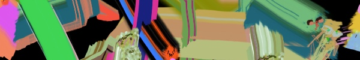

👹 ARTSTUFF.WTF

FRI 3/23
VOLUME + Human Resources Present Chris Duncan: 12 Symbols
Human Resources
6pm - 9pm (additional gallery hours/performances throughout weekend)
$?
12 SYMBOLS, composed by Chris Duncan, is an immersive sound performance and exhibition that metaphorically implicates the energy and patterns of the sun, moon, and the phenomenon of the eclipse to ponder our relationship to the passing of time. Cymbals become Symbols as 12 percussionists engage light, movement, and sound. The physical stage set by the initial performance of 12 SYMBOLS moves through phases throughout the course of the exhibition, welcoming a host of artists from Northern and Southern California alike in a series of performances. The exhibition and performances are dedicated to the loving memory of Paul Clipson, a light and love gone too soon.
LINK

SAT 3/24
INTRO TO SUPER 8 FILMMAKING AND HANDPROCESSING
Echo Park Film Center
1pm - 6pm
$60/75
Using the classic home-movie camera, participants will explore the history, application and tender sophistication of small format filmmaking. This one-day workshop includes basic camera operation, shooting techniques and hand-processing. No previous filmmaking experience necessary. All equipment and materials provided by EPFC. Class limited to 9 participants.
LINK
Architecture + Feminism - Editathon
2426 W Washington
2pm - 6pm
FREE
Architecture represents an important part of cultural production where gender trouble is even more pronounced than in other disciplines, professions, and fields. Wikipedia's content is skewed by the lack of female content and participation. This represents an alarming lack in an increasingly important repository of shared knowledge. Let’s change that. Join us for a communal updating of Wikipedia entries on subjects related to architecture and feminism. We will provide tutorials for the beginner Wikipedian, reference materials, petcare, and refreshments. Bring your laptop, power cord and ideas for entries that need updating or creation. People of all gender identities and expressions are invited to participate.
LINK
Sticks and Stones exhibition
SMART OBJECTS
7pm - 10pm
FREE
SMART OBJECTS presents "Sticks and Stones", a group exhibition of works by Eddie Rodolfo Aparicio, Sarah Gail Armstrong, Justin Chance, Brandon Coley Cox, and Jasmine Nyende. Curated by Chadwick Gibson and Cheyenne Julien.
LINK

SUN 3/25
Art + Feminism 2018: Women + Film
Los Angeles County Museum of Art (LACMA)
12pm - 5pm
Free (with admission?)
Join LACMA and East of Borneo for a Wikipedia edit-a-thon and panel discussion addressing gender inequality in the film industry. Art and Feminism is a global campaign to improve the coverage of women and the arts on Wikipedia, the world’s online encyclopedia. A 2011 survey by the Wikimedia Foundation found that fewer than 10% of Wikipedia’s editors identify as female, and its content is skewed by the lack of female participation. Let’s change that. Beginners are welcome! The afternoon will kickoff with the panel discussion moderated by Dilcia Barrera, associate curator of film programs at LACMA at noon, followed by a Wikipedia training workshop at 2 pm to walk you step-by-step through the process of editing and creating new articles. Bring your own laptop and any books or other reference materials you’d like to work from or share. You may also search LACMA’s Balch Art Research Library catalog for additional resources.
LINK
Jaap Blonk, Ted Byrnes, William Hutson, Micaela Tobin, Lucky Dragons
Zebulon
8pm
FREE
Dutch vocalist/sound poet/improvisor Jaap Blonk is back in LA, is playing THIS SUNDAY (3/25) at Zebulon. Jaap will be doing a duo with Ted Byrnes and a first-time trio with Micaela Tobin (vocals) & William Hutson (electronics, tape). IN ADDITION, Lucky Dragons will be performing (for the first time in a 'music venue' in quite a while) and LA-based beat smith and DJ Kenny Segal will be selecting and creating between sets. Kenny is known for his production for such hip hop artists as MILO and BUSDRIVER as well as making his own instrumental work. Also, all of this is FREE. Come on out, have a couple drinks, and enjoy this eclectic night of music with us. We hope to see you!
LINK

ABOUT
ARTSTUFF.WTF is a minimal website listing page for selected mostly DIY art (and etc) events going on around Los Angeles. It is a personal list of 5 - 10 events sent out to friends weekly, and made available online here for bookmarking and quick reference. There is an archive of past listings. Sign up to receive weekly emails. Made by Lee Tusman.